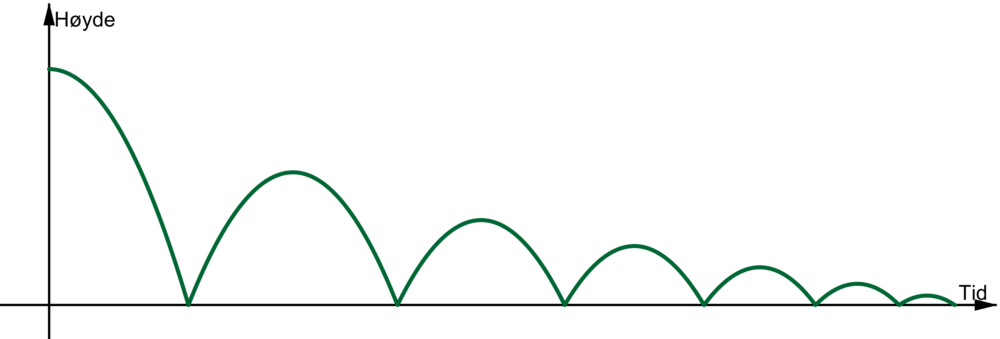
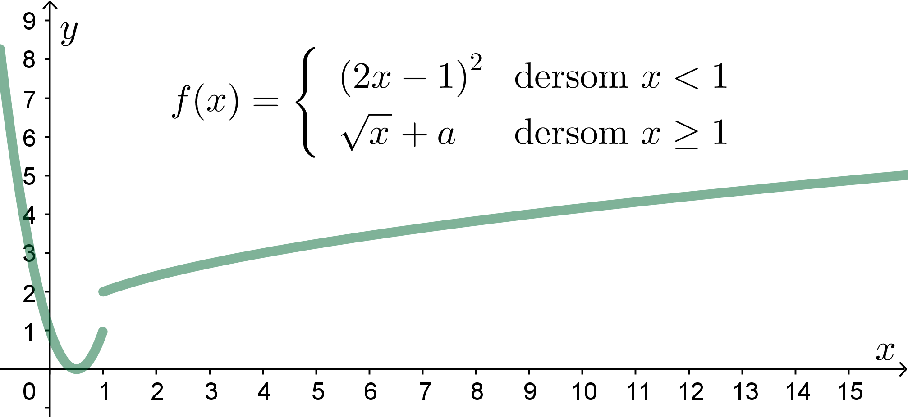
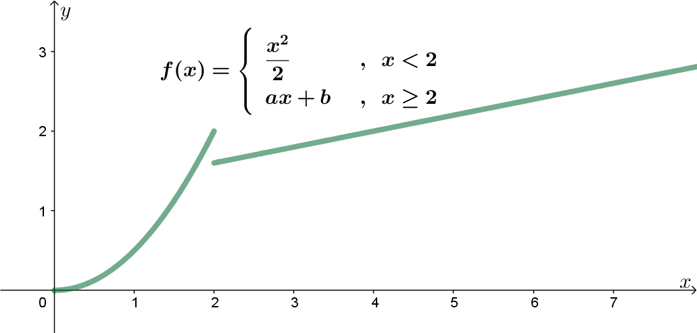
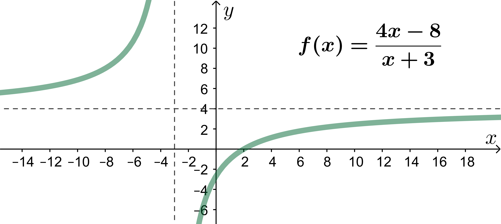

Når vi nærmer oss punktet nedenfra er funksjonsverdien gitt ved
\[
\lim_{x\rightarrow 2^-} f(x)=2
\]
Når vi nærmer oss punktet ovenfra er funksjonsverdien gitt ved
\[
\lim_{x\rightarrow 2^+} f(x)=f(2)=3
\]
Det finnes mange praktiske situasjoner hvor det er aktuelt å bruke funksjoner
med delt forskrift, f.eks. i forbindelse med økonomi eller i fysikk.
Eksempel
Skisse av høydefunksjonen til en ball som spretter:

Hver gang ballen treffer bakken får funksjonen et delingspunkt.
Kontinuitet
Kontinuerlige funksjoner er funksjoner som ikke "hopper" i
definisjonsområdet; funksjoner vi kan tegne innenfor definisjonsområdet
uten å løfte pennen fra arket.
Eksempel
Bestem \(a\) slik at funksjonen nedenfor blir kontinuerlig.

Løsning
Uttrykkene for \(f(x)\) må være like i delingspunktet:
Et delt funksjonsuttrykk er deriverbart i delingspunktet hvis funksjonen
er kontinuerlig og hvis stigningstallet er det samme på begge sider av
delingspunktet.
Eksempel
Bestem \(a\) og \(b\) slik at funksjonen blir deriverbar i delingspunktet.

Løsning
For at stigningstallet skal være det samme må
\[
\begin{aligned}
(ax+b)' &= \left(\frac{x^2}{2}\right)'\\
a &= x\\
a &= 2
\end{aligned}
\]
Merk:
Vi sier at en funksjon er kontinuerlig og deriverbar så lenge den er kontinuerlig og deriverbar innenfor
definisjonsområdet.
Funksjonen nedenfor er kontinuerlig og deriverbar, selv om den
"hopper" når \(x=-3\), siden funksjonen ikke er definert når \(x=-3\).
Definisjonsmengden er \(D_f=\mathbb{R}\setminus\{-3\}\).

Rasjonale funksjoner
En rasjonal funksjon er en funksjon der både teller og nevner er en
polynomfunksjon.
Asymptoter
Hvis en rasjonal funksjon har en horisontal, altså vannrett, asymptote er
den gitt ved
\[
y=\lim_{x\rightarrow\infty} f(x)
\]
Hvis en rasjonal funksjon har en vertikal, altså loddrett, asymptote er
den gitt ved \(x\) = nullpunktet til nevneren.
Eksempel
Bestem den horisontale og vertikale asymptoten til funksjonen
\[
f(x)=\frac{4x-8}{x+3}
\]
Løsning
Vi bruker L'Hôpitals regel for å finne den horisontale: